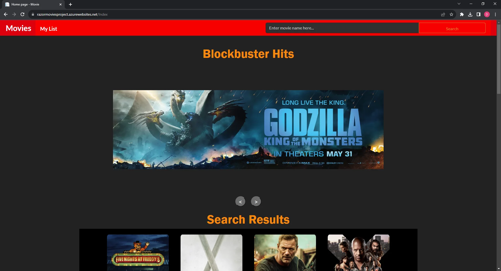
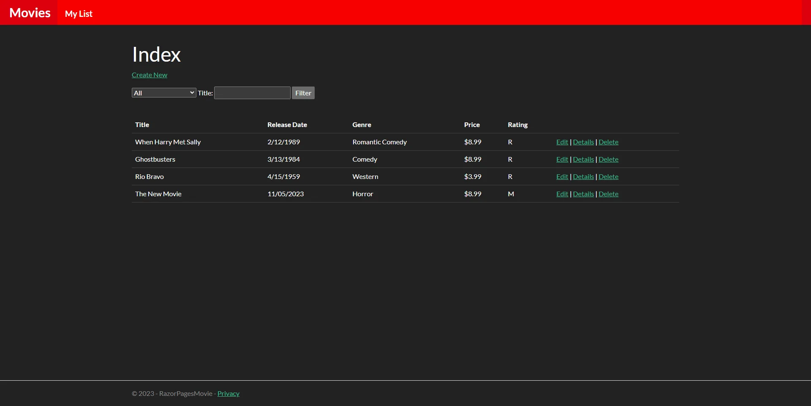
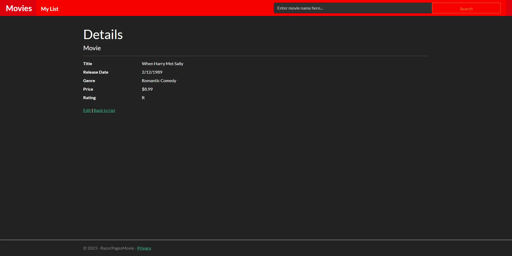
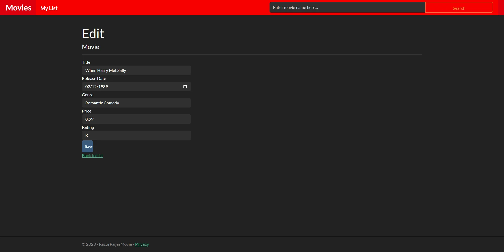
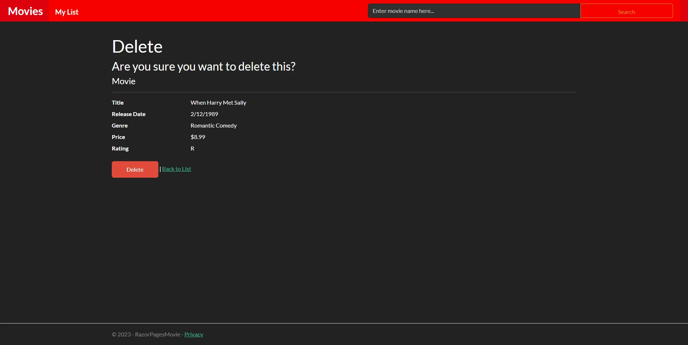
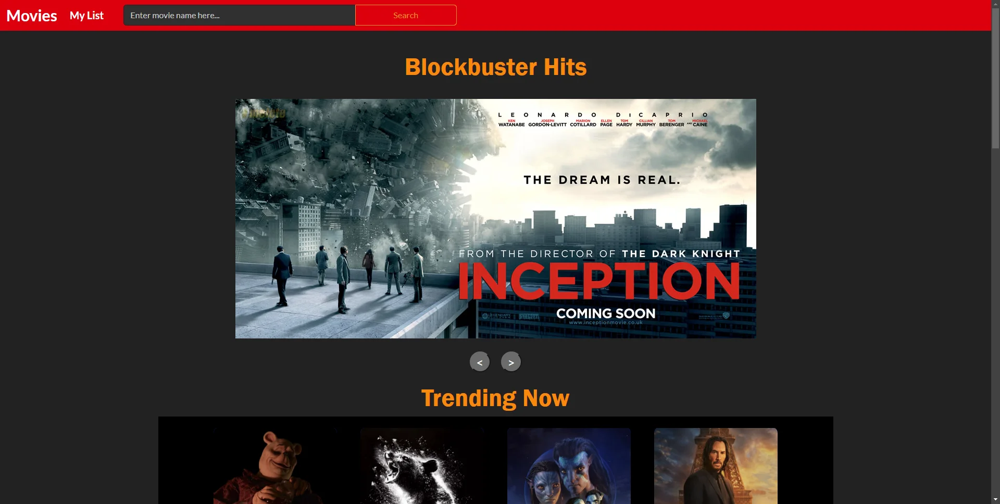
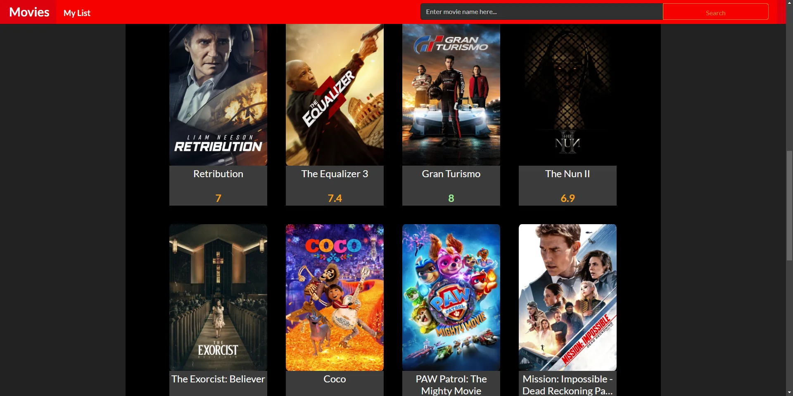
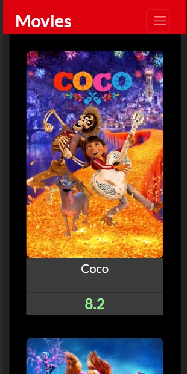
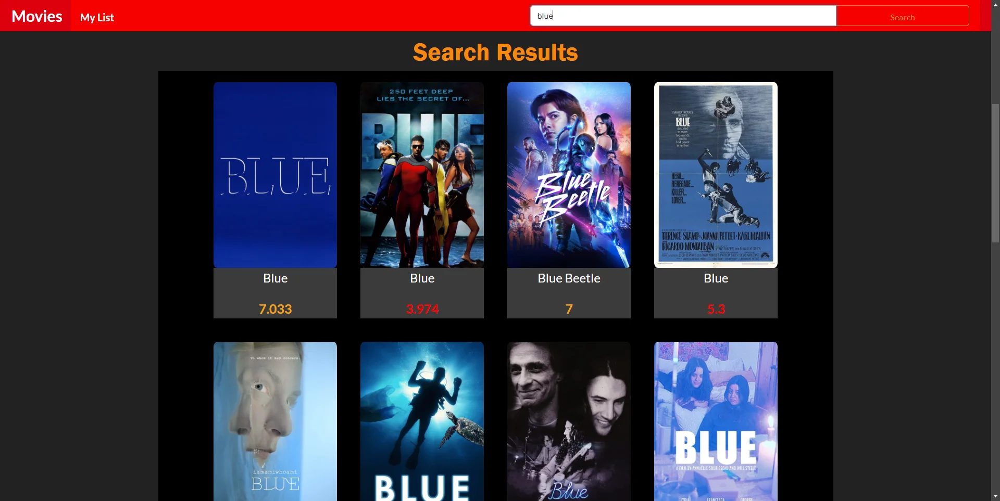

website case study
A movie-tracking web app built on ASP.NET Core MVC, using the TMDb API for movie data. No longer live — see below for why.
MyRazorMovies was a web application for movie enthusiasts to track and manage a personal repository of favorite films. Built on ASP.NET Core MVC with C#, it used TheMovieDatabase (TMDb) API to fetch an updated list of trending and recent movies, so users always had a current selection to browse and favorite.

The homepage features a dynamic display of the most recent and popular movies — titles, posters, release dates, and popularity scores sourced directly from TMDb.




Full Create, Read, Update, and Delete support for user-curated lists, enabling robust, hands-on data management.


The site adjusted seamlessly across screen sizes, from desktop down to mobile.

The full mobile layout, shown at full height rather than cropped alongside the desktop screenshots.

Search a full selection of movies by keyword.
stack
The Model-View-Controller pattern, for a clean separation of concerns and a streamlined codebase.
Server-side logic with a strong object-oriented backbone for the application's functionality.
Hosted on Azure for secure, scalable cloud computing and app-service features.
Real-time access to an extensive movie database, keeping listings current and popular titles up to date.
lessons learned
Ensuring robustness in the user's ability to manage their movie lists required careful design of the CRUD interface, refined through rigorous testing and iterative development.
Running on the lowest tier of Azure's services meant the app would idle after 20 minutes of inactivity, slowing the next visit's response time. I set up a monitor on UptimeRobot to periodically ping the server and keep it warm, until I found the workaround itself too costly to keep running.
The app is no longer live — maintaining the database was an ongoing cost I decided not to keep paying for a personal project, so I took it down. The demo video and screenshots above are how you can see it today.